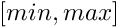

| ▼N__cxxabiv1 | |
| C__forced_unwind | Thrown as part of forced unwinding |
| ▼N__gnu_cxx | GNU extensions for public use |
| ▼N__detail | Implementation details not part of the namespace __gnu_cxx interface |
| C__mini_vector | __mini_vector<> is a stripped down version of the full-fledged std::vector<> |
| C_Bitmap_counter | The bitmap counter which acts as the bitmap manipulator, and manages the bit-manipulation functions and the searching and identification functions on the bit-map |
| C_Ffit_finder | The class which acts as a predicate for applying the first-fit memory allocation policy for the bitmap allocator |
| C__alloc_traits | Uniform interface to C++98 and C++11 allocators |
| C__common_pool_policy | Policy for shared __pool objects |
| C__mt_alloc | This is a fixed size (power of 2) allocator which - when compiled with thread support - will maintain one freelist per size per thread plus a global one. Steps are taken to limit the per thread freelist sizes (by returning excess back to the global list) |
| C__mt_alloc_base | Base class for _Tp dependent member functions |
| C__per_type_pool_policy | Policy for individual __pool objects |
| C__pool | Data describing the underlying memory pool, parameterized on threading support |
| C__pool< false > | Specialization for single thread |
| C__pool< true > | Specialization for thread enabled, via gthreads.h |
| C__pool_alloc | Allocator using a memory pool with a single lock |
| C__pool_alloc_base | Base class for __pool_alloc |
| C__pool_base | Base class for pool object |
| C__rc_string_base | |
| C__scoped_lock | Scoped lock idiom |
| C__versa_string | Template class __versa_string |
| C_Caster | |
| C_Char_types | Mapping from character type to associated types |
| C_ExtPtr_allocator | An example allocator which uses a non-standard pointer type |
| C_Invalid_type | |
| C_Pointer_adapter | |
| C_Relative_pointer_impl | A storage policy for use with _Pointer_adapter<> which stores the pointer's address as an offset value which is relative to its own address |
| C_Relative_pointer_impl< const _Tp > | |
| C_Std_pointer_impl | A storage policy for use with _Pointer_adapter<> which yields a standard pointer |
| C_Unqualified_type | |
| Cannotate_base | Base class for checking address and label information about allocations. Create a std::map between the allocated address (void*) and a datum for annotations, which are a pair of numbers corresponding to label and allocated size |
| Cbinary_compose | An SGI extension |
| Cbitmap_allocator | Bitmap Allocator, primary template |
| Cchar_traits | Base class used to implement std::char_traits |
| Ccharacter | A POD class that serves as a character abstraction class |
| Ccondition_base | Base struct for condition policy |
| Cconstant_binary_fun | An SGI extension |
| Cconstant_unary_fun | An SGI extension |
| Cconstant_void_fun | An SGI extension |
| Cdebug_allocator | A meta-allocator with debugging bits |
| Cenc_filebuf | Class enc_filebuf |
| Cencoding_char_traits | Encoding_char_traits |
| Cencoding_state | Extension to use iconv for dealing with character encodings |
| Cforced_error | Thrown by utilities for testing exception safety |
| Cfree_list | The free list class for managing chunks of memory to be given to and returned by the bitmap_allocator |
| Chash_map | |
| Chash_multimap | |
| Chash_multiset | |
| Chash_set | |
| ▼Climit_condition | Base class for incremental control and throw |
| Calways_adjustor | Always enter the condition |
| Climit_adjustor | Enter the nth condition |
| Cnever_adjustor | Never enter the condition |
| Cmalloc_allocator | An allocator that uses malloc |
| Cnew_allocator | An allocator that uses global new, as per C++03 [20.4.1] |
| Cproject1st | An SGI extension |
| Cproject2nd | An SGI extension |
| ▼Crandom_condition | Base class for random probability control and throw |
| Calways_adjustor | Always enter the condition |
| Cgroup_adjustor | Group condition |
| Cnever_adjustor | Never enter the condition |
| Crb_tree | |
| Crecursive_init_error | Exception thrown by __cxa_guard_acquire |
| Crope | |
| Cselect1st | An SGI extension |
| Cselect2nd | An SGI extension |
| Cslist | |
| Cstdio_filebuf | Provides a layer of compatibility for C/POSIX |
| Cstdio_sync_filebuf | Provides a layer of compatibility for C |
| Csubtractive_rng | |
| Ctemporary_buffer | |
| Cthrow_allocator_base | Allocator class with logging and exception generation control. Intended to be used as an allocator_type in templatized code |
| Cthrow_allocator_limit | Allocator throwing via limit condition |
| Cthrow_allocator_random | Allocator throwing via random condition |
| Cthrow_value_base | Class with exception generation control. Intended to be used as a value_type in templatized code |
| Cthrow_value_limit | Type throwing via limit condition |
| Cthrow_value_random | Type throwing via random condition |
| Cunary_compose | An SGI extension |
| ▼N__gnu_debug | GNU debug classes for public use |
| C_After_nth_from | |
| C_BeforeBeginHelper | |
| C_Equal_to | |
| C_Not_equal_to | |
| C_Safe_container | Safe class dealing with some allocator dependent operations |
| C_Safe_forward_list | Special iterators swap and invalidation for forward_list because of the before_begin iterator |
| C_Safe_iterator | Safe iterator wrapper |
| C_Safe_iterator_base | Basic functionality for a safe iterator |
| C_Safe_local_iterator | Safe iterator wrapper |
| C_Safe_local_iterator_base | Basic functionality for a safe iterator |
| C_Safe_node_sequence | Like _Safe_sequence but with a special _M_invalidate_all implementation not invalidating past-the-end iterators. Used by node based sequence |
| C_Safe_sequence | Base class for constructing a safe sequence type that tracks iterators that reference it |
| C_Safe_sequence_base | Base class that supports tracking of iterators that reference a sequence |
| C_Safe_unordered_container | Base class for constructing a safe unordered container type that tracks iterators that reference it |
| C_Safe_unordered_container_base | Base class that supports tracking of local iterators that reference an unordered container |
| C_Safe_vector | Base class for Debug Mode vector |
| C_Sequence_traits | |
| Cbasic_string | Class std::basic_string with safety/checking/debug instrumentation |
| ▼N__gnu_parallel | GNU parallel code for public use |
| C__accumulate_binop_reduct | General reduction, using a binary operator |
| C__accumulate_selector | Std::accumulate() selector |
| C__adjacent_difference_selector | Selector that returns the difference between two adjacent __elements |
| C__adjacent_find_selector | Test predicate on two adjacent elements |
| C__binder1st | Similar to std::binder1st, but giving the argument types explicitly |
| C__binder2nd | Similar to std::binder2nd, but giving the argument types explicitly |
| C__count_if_selector | Std::count_if () selector |
| C__count_selector | Std::count() selector |
| C__fill_selector | Std::fill() selector |
| C__find_first_of_selector | Test predicate on several elements |
| C__find_if_selector | Test predicate on a single element, used for std::find() and std::find_if () |
| C__for_each_selector | Std::for_each() selector |
| C__generate_selector | Std::generate() selector |
| C__generic_find_selector | Base class of all __gnu_parallel::__find_template selectors |
| C__generic_for_each_selector | Generic __selector for embarrassingly parallel functions |
| C__identity_selector | Selector that just returns the passed iterator |
| C__inner_product_selector | Std::inner_product() selector |
| C__max_element_reduct | Reduction for finding the maximum element, using a comparator |
| C__min_element_reduct | Reduction for finding the maximum element, using a comparator |
| C__mismatch_selector | Test inverted predicate on a single element |
| C__multiway_merge_3_variant_sentinel_switch | Switch for 3-way merging with __sentinels turned off |
| C__multiway_merge_3_variant_sentinel_switch< true, _RAIterIterator, _RAIter3, _DifferenceTp, _Compare > | Switch for 3-way merging with __sentinels turned on |
| C__multiway_merge_4_variant_sentinel_switch | Switch for 4-way merging with __sentinels turned off |
| C__multiway_merge_4_variant_sentinel_switch< true, _RAIterIterator, _RAIter3, _DifferenceTp, _Compare > | Switch for 4-way merging with __sentinels turned on |
| C__multiway_merge_k_variant_sentinel_switch | Switch for k-way merging with __sentinels turned on |
| C__multiway_merge_k_variant_sentinel_switch< false, __stable, _RAIterIterator, _RAIter3, _DifferenceTp, _Compare > | Switch for k-way merging with __sentinels turned off |
| C__replace_if_selector | Std::replace() selector |
| C__replace_selector | Std::replace() selector |
| C__transform1_selector | Std::transform() __selector, one input sequence variant |
| C__transform2_selector | Std::transform() __selector, two input sequences variant |
| C__unary_negate | Similar to std::unary_negate, but giving the argument types explicitly |
| C_DRandomShufflingGlobalData | Data known to every thread participating in __gnu_parallel::__parallel_random_shuffle() |
| C_DRSSorterPU | Local data for a thread participating in __gnu_parallel::__parallel_random_shuffle() |
| C_DummyReduct | Reduction function doing nothing |
| C_EqualFromLess | Constructs predicate for equality from strict weak ordering predicate |
| C_EqualTo | Similar to std::equal_to, but allows two different types |
| C_GuardedIterator | _Iterator wrapper supporting an implicit supremum at the end of the sequence, dominating all comparisons |
| C_IteratorPair | A pair of iterators. The usual iterator operations are applied to both child iterators |
| C_IteratorTriple | A triple of iterators. The usual iterator operations are applied to all three child iterators |
| C_Job | One __job for a certain thread |
| C_Less | Similar to std::less, but allows two different types |
| C_Lexicographic | Compare __a pair of types lexicographically, ascending |
| C_LexicographicReverse | Compare __a pair of types lexicographically, descending |
| C_LoserTree | Stable _LoserTree variant |
| C_LoserTree< false, _Tp, _Compare > | Unstable _LoserTree variant |
| ▼C_LoserTreeBase | Guarded loser/tournament tree |
| C_Loser | Internal representation of a _LoserTree element |
| C_LoserTreePointer | Stable _LoserTree implementation |
| C_LoserTreePointer< false, _Tp, _Compare > | Unstable _LoserTree implementation |
| ▼C_LoserTreePointerBase | Base class of _Loser Tree implementation using pointers |
| C_Loser | Internal representation of _LoserTree __elements |
| C_LoserTreePointerUnguarded | Stable unguarded _LoserTree variant storing pointers |
| C_LoserTreePointerUnguarded< false, _Tp, _Compare > | Unstable unguarded _LoserTree variant storing pointers |
| C_LoserTreePointerUnguardedBase | Unguarded loser tree, keeping only pointers to the elements in the tree structure |
| C_LoserTreeTraits | Traits for determining whether the loser tree should use pointers or copies |
| C_LoserTreeUnguarded | Stable implementation of unguarded _LoserTree |
| C_LoserTreeUnguarded< false, _Tp, _Compare > | Non-Stable implementation of unguarded _LoserTree |
| C_LoserTreeUnguardedBase | Base class for unguarded _LoserTree implementation |
| C_Multiplies | Similar to std::multiplies, but allows two different types |
| C_Nothing | Functor doing nothing |
| C_Piece | Subsequence description |
| C_Plus | Similar to std::plus, but allows two different types |
| C_PMWMSSortingData | Data accessed by all threads |
| C_PseudoSequence | Sequence that conceptually consists of multiple copies of the same element. The copies are not stored explicitly, of course |
| C_PseudoSequenceIterator | _Iterator associated with __gnu_parallel::_PseudoSequence. If features the usual random-access iterator functionality |
| C_QSBThreadLocal | Information local to one thread in the parallel quicksort run |
| C_RandomNumber | Random number generator, based on the Mersenne twister |
| C_RestrictedBoundedConcurrentQueue | Double-ended queue of bounded size, allowing lock-free atomic access. push_front() and pop_front() must not be called concurrently to each other, while pop_back() can be called concurrently at all times. empty(), size(), and top() are intentionally not provided. Calling them would not make sense in a concurrent setting |
| C_SamplingSorter | Stable sorting functor |
| C_SamplingSorter< false, _RAIter, _StrictWeakOrdering > | Non-__stable sorting functor |
| C_Settings | Class _Settings Run-time settings for the parallel mode including all tunable parameters |
| C_SplitConsistently | Split consistently |
| C_SplitConsistently< false, _RAIter, _Compare, _SortingPlacesIterator > | Split by sampling |
| C_SplitConsistently< true, _RAIter, _Compare, _SortingPlacesIterator > | Split by exact splitting |
| Cbalanced_quicksort_tag | Forces parallel sorting using balanced quicksort at compile time |
| Cbalanced_tag | Recommends parallel execution using dynamic load-balancing at compile time |
| Cconstant_size_blocks_tag | Selects the constant block size variant for std::find() |
| Cdefault_parallel_tag | Recommends parallel execution using the default parallel algorithm |
| Cequal_split_tag | Selects the equal splitting variant for std::find() |
| Cexact_tag | Forces parallel merging with exact splitting, at compile time |
| Cfind_tag | Base class for for std::find() variants |
| Cgrowing_blocks_tag | Selects the growing block size variant for std::find() |
| Cmultiway_mergesort_exact_tag | Forces parallel sorting using multiway mergesort with exact splitting at compile time |
| Cmultiway_mergesort_sampling_tag | Forces parallel sorting using multiway mergesort with splitting by sampling at compile time |
| Cmultiway_mergesort_tag | Forces parallel sorting using multiway mergesort at compile time |
| Comp_loop_static_tag | Recommends parallel execution using OpenMP static load-balancing at compile time |
| Comp_loop_tag | Recommends parallel execution using OpenMP dynamic load-balancing at compile time |
| Cparallel_tag | Recommends parallel execution at compile time, optionally using a user-specified number of threads |
| Cquicksort_tag | Forces parallel sorting using unbalanced quicksort at compile time |
| Csampling_tag | Forces parallel merging with exact splitting, at compile time |
| Csequential_tag | Forces sequential execution at compile time |
| Cunbalanced_tag | Recommends parallel execution using static load-balancing at compile time |
| ▼N__gnu_pbds | GNU extensions for policy-based data structures for public use |
| ▼Ndetail | |
| Cbin_search_tree_const_it_ | Const iterator |
| Cbin_search_tree_const_node_it_ | Const node iterator |
| Cbin_search_tree_it_ | Iterator |
| Cbin_search_tree_node_it_ | Node iterator |
| Cbin_search_tree_traits | Binary search tree traits, primary template |
| Cbin_search_tree_traits< Key, null_type, Cmp_Fn, Node_Update, Node, _Alloc > | Specialization |
| Cbinary_heap | |
| Cbinary_heap_const_iterator_ | Const point-type iterator |
| Cbinary_heap_point_const_iterator_ | Const point-type iterator |
| Cbinomial_heap | |
| Cbinomial_heap_base | Base class for binomial heap |
| Cbranch_policy | Primary template, base class for branch structure policies |
| Cbranch_policy< Node_CItr, Node_CItr, _Alloc > | Specialization for const iterators |
| Ccc_ht_map | |
| Ccond_dealtor | Conditional deallocate constructor argument |
| Ccontainer_base_dispatch | Dispatch mechanism, primary template for associative types |
| Ccontainer_base_dispatch< _VTp, Cmp_Fn, _Alloc, binary_heap_tag, null_type > | Specialization for binary_heap |
| Ccontainer_base_dispatch< _VTp, Cmp_Fn, _Alloc, binomial_heap_tag, null_type > | Specialization for binomial_heap |
| Ccontainer_base_dispatch< _VTp, Cmp_Fn, _Alloc, pairing_heap_tag, null_type > | Specialization for pairing_heap |
| Ccontainer_base_dispatch< _VTp, Cmp_Fn, _Alloc, rc_binomial_heap_tag, null_type > | Specialization for rc_binary_heap |
| Ccontainer_base_dispatch< _VTp, Cmp_Fn, _Alloc, thin_heap_tag, null_type > | Specialization for thin_heap |
| Ccontainer_base_dispatch< Key, Mapped, _Alloc, cc_hash_tag, Policy_Tl > | Specialization colision-chaining hash map |
| Ccontainer_base_dispatch< Key, Mapped, _Alloc, gp_hash_tag, Policy_Tl > | Specialization general-probe hash map |
| Ccontainer_base_dispatch< Key, Mapped, _Alloc, list_update_tag, Policy_Tl > | Specialization for list-update map |
| Ccontainer_base_dispatch< Key, Mapped, _Alloc, ov_tree_tag, Policy_Tl > | Specialization ordered-vector tree map |
| Ccontainer_base_dispatch< Key, Mapped, _Alloc, pat_trie_tag, Policy_Tl > | Specialization for PATRICIA trie map |
| Ccontainer_base_dispatch< Key, Mapped, _Alloc, rb_tree_tag, Policy_Tl > | Specialization for R-B tree map |
| Ccontainer_base_dispatch< Key, Mapped, _Alloc, splay_tree_tag, Policy_Tl > | Specialization splay tree map |
| Ccontainer_base_dispatch< Key, null_type, _Alloc, cc_hash_tag, Policy_Tl > | Specialization colision-chaining hash set |
| Ccontainer_base_dispatch< Key, null_type, _Alloc, gp_hash_tag, Policy_Tl > | Specialization general-probe hash set |
| Ccontainer_base_dispatch< Key, null_type, _Alloc, list_update_tag, Policy_Tl > | Specialization for list-update set |
| Ccontainer_base_dispatch< Key, null_type, _Alloc, ov_tree_tag, Policy_Tl > | Specialization ordered-vector tree set |
| Ccontainer_base_dispatch< Key, null_type, _Alloc, pat_trie_tag, Policy_Tl > | Specialization for PATRICIA trie set |
| Ccontainer_base_dispatch< Key, null_type, _Alloc, rb_tree_tag, Policy_Tl > | Specialization for R-B tree set |
| Ccontainer_base_dispatch< Key, null_type, _Alloc, splay_tree_tag, Policy_Tl > | Specialization splay tree set |
| Cdefault_comb_hash_fn | Primary template, default_comb_hash_fn |
| Cdefault_eq_fn | Primary template, default_eq_fn |
| Cdefault_hash_fn | Primary template, default_hash_fn |
| Cdefault_probe_fn | Primary template, default_probe_fn |
| Cdefault_resize_policy | Primary template, default_resize_policy |
| Cdefault_trie_access_traits | Primary template, default_trie_access_traits |
| Cdefault_trie_access_traits< std::basic_string | Partial specialization, default_trie_access_traits |
| Cdefault_update_policy | Default update policy |
| Cdumnode_const_iterator | Constant node iterator |
| Centry_cmp | Entry compare, primary template |
| ▼Centry_cmp< _VTp, Cmp_Fn, _Alloc, false > | Specialization, false |
| Ctype | Compare plus entry |
| Centry_cmp< _VTp, Cmp_Fn, _Alloc, true > | Specialization, true |
| Centry_pred | Entry predicate primary class template |
| Centry_pred< _VTp, Pred, _Alloc, false > | Specialization, false |
| Centry_pred< _VTp, Pred, _Alloc, true > | Specialization, true |
| Ceq_by_less | Equivalence function |
| Cgp_ht_map | |
| Chash_eq_fn | Primary template |
| Chash_eq_fn< Key, Eq_Fn, _Alloc, false > | Specialization 1 - The client requests that hash values not be stored |
| Chash_eq_fn< Key, Eq_Fn, _Alloc, true > | Specialization 2 - The client requests that hash values be stored |
| Chash_load_check_resize_trigger_size_base | Primary template |
| Chash_load_check_resize_trigger_size_base< Size_Type, true > | Specializations |
| Cleft_child_next_sibling_heap | Base class for a basic heap |
| Cleft_child_next_sibling_heap_const_iterator_ | Const point-type iterator |
| Cleft_child_next_sibling_heap_node_ | Node |
| Cleft_child_next_sibling_heap_node_point_const_iterator_ | Const point-type iterator |
| Clu_counter_metadata | A list-update metadata type that moves elements to the front of the list based on the counter algorithm |
| Clu_counter_policy_base | Base class for list-update counter policy |
| Clu_map | List-based (with updates) associative container. Skip to the lu, my darling |
| Cmask_based_range_hashing | Range hashing policy |
| Cmaybe_null_type | Base class for conditionally defining a static data member |
| Cmaybe_null_type< Key, null_type, _Alloc, Store_Hash > | Specialization that defines a static data member of type null_type |
| Cmod_based_range_hashing | Mod based range hashing |
| Cno_throw_copies | Primary template |
| Cno_throw_copies< Key, null_type > | Specialization |
| ▼Cov_tree_map | Ordered-vector tree associative-container |
| Ccond_dtor | Conditional destructor |
| Cov_tree_node_const_it_ | Const node reference |
| Cov_tree_node_it_ | Node reference |
| Cpairing_heap | |
| ▼Cpat_trie_base | Base type for PATRICIA trees |
| C_CIter | Const iterator |
| C_Head | Head node for PATRICIA tree |
| ▼C_Inode | Internal node type, PATRICIA tree |
| Cconst_iterator | Constant child iterator |
| Citerator | Child iterator |
| C_Iter | Iterator |
| C_Leaf | Leaf node for PATRICIA tree |
| C_Metadata | Metadata base primary template |
| C_Metadata< null_type, _Alloc > | Specialization for null metadata |
| C_Node_base | Node base |
| C_Node_citer | Node const iterator |
| C_Node_iter | Node iterator |
| Cpat_trie_map | PATRICIA trie |
| Cprobe_fn_base | Probe functor base |
| Cranged_hash_fn | Primary template |
| Cranged_hash_fn< Key, Hash_Fn, _Alloc, Comb_Hash_Fn, false > | |
| Cranged_hash_fn< Key, Hash_Fn, _Alloc, Comb_Hash_Fn, true > | |
| Cranged_hash_fn< Key, null_type, _Alloc, Comb_Hash_Fn, false > | |
| Cranged_hash_fn< Key, null_type, _Alloc, Comb_Hash_Fn, true > | |
| Cranged_probe_fn | Primary template |
| Cranged_probe_fn< Key, Hash_Fn, _Alloc, Comb_Probe_Fn, Probe_Fn, false > | |
| Cranged_probe_fn< Key, Hash_Fn, _Alloc, Comb_Probe_Fn, Probe_Fn, true > | |
| Cranged_probe_fn< Key, null_type, _Alloc, Comb_Probe_Fn, null_type, false > | |
| Crb_tree_map | Red-Black tree |
| Crb_tree_node_ | Node for Red-Black trees |
| Crc | Redundant binary counter |
| Crc_binomial_heap | |
| Crebind_traits | Consistent API for accessing allocator-related types |
| Cresize_policy | Resize policy for binary heap |
| Cselect_value_type | Choose value_type to be a key/value pair or just a key |
| Cselect_value_type< Key, null_type > | Specialization for sets where the key is the value_type |
| Csplay_tree_map | Splay tree |
| Csplay_tree_node_ | Node for splay tree |
| Cstored_data | Primary template for representation of stored data. Two types of data can be stored: value and hash |
| Cstored_data< _Tv, _Th, false > | Specialization for representation of stored data of just value type |
| Cstored_hash | Stored hash |
| Cstored_value | Stored value |
| Csynth_access_traits | Synthetic element access traits |
| Cthin_heap | |
| Ctree_metadata_helper | Tree metadata helper |
| Ctree_metadata_helper< Node_Update, false > | Specialization, false |
| Ctree_metadata_helper< Node_Update, true > | Specialization, true |
| Ctree_node_metadata_dispatch | Tree node metadata dispatch |
| Ctree_traits | Tree traits class, primary template |
| Ctree_traits< Key, Mapped, Cmp_Fn, Node_Update, ov_tree_tag, _Alloc > | Tree traits |
| Ctree_traits< Key, Mapped, Cmp_Fn, Node_Update, rb_tree_tag, _Alloc > | Specialization |
| Ctree_traits< Key, Mapped, Cmp_Fn, Node_Update, splay_tree_tag, _Alloc > | Specialization |
| Ctree_traits< Key, null_type, Cmp_Fn, Node_Update, ov_tree_tag, _Alloc > | Specialization |
| Ctree_traits< Key, null_type, Cmp_Fn, Node_Update, rb_tree_tag, _Alloc > | Specialization |
| Ctree_traits< Key, null_type, Cmp_Fn, Node_Update, splay_tree_tag, _Alloc > | Specialization |
| Ctrie_metadata_helper | Trie metadata helper |
| Ctrie_metadata_helper< Node_Update, false > | Specialization, false |
| Ctrie_metadata_helper< Node_Update, true > | Specialization, true |
| Ctrie_node_metadata_dispatch | Trie node metadata dispatch |
| Ctrie_policy_base | Base class for trie policies |
| Ctrie_traits | Trie traits class, primary template |
| Ctrie_traits< Key, Mapped, _ATraits, Node_Update, pat_trie_tag, _Alloc > | Specialization |
| Ctrie_traits< Key, null_type, _ATraits, Node_Update, pat_trie_tag, _Alloc > | Specialization |
| Ctypes_traits | Traits for abstract types |
| Cassociative_tag | Basic associative-container |
| Cbasic_branch | |
| Cbasic_branch_tag | Basic branch structure |
| Cbasic_hash_table | |
| Cbasic_hash_tag | Basic hash structure |
| Cbasic_invalidation_guarantee | |
| Cbinary_heap_tag | Binary-heap (array-based) |
| Cbinomial_heap_tag | Binomial-heap |
| Ccc_hash_max_collision_check_resize_trigger | A resize trigger policy based on collision checks. It keeps the simulated load factor lower than some given load factor |
| Ccc_hash_table | |
| Ccc_hash_tag | Collision-chaining hash |
| Ccontainer_error | Base class for exceptions |
| Ccontainer_tag | Base data structure tag |
| Ccontainer_traits | Container traits |
| Ccontainer_traits_base | Primary template, container traits base |
| Ccontainer_traits_base< binary_heap_tag > | Specialization, binary heap |
| Ccontainer_traits_base< binomial_heap_tag > | Specialization, binomial heap |
| Ccontainer_traits_base< cc_hash_tag > | Specialization, cc hash |
| Ccontainer_traits_base< gp_hash_tag > | Specialization, gp hash |
| Ccontainer_traits_base< list_update_tag > | Specialization, list update |
| Ccontainer_traits_base< ov_tree_tag > | Specialization, ov tree |
| Ccontainer_traits_base< pairing_heap_tag > | Specialization, pairing heap |
| Ccontainer_traits_base< pat_trie_tag > | Specialization, pat trie |
| Ccontainer_traits_base< rb_tree_tag > | Specialization, rb tree |
| Ccontainer_traits_base< rc_binomial_heap_tag > | Specialization, rc binomial heap |
| Ccontainer_traits_base< splay_tree_tag > | Specialization, splay tree |
| Ccontainer_traits_base< thin_heap_tag > | Specialization, thin heap |
| Cdirect_mask_range_hashing | A mask range-hashing class (uses a bitmask) |
| Cdirect_mod_range_hashing | A mod range-hashing class (uses the modulo function) |
| Cgp_hash_table | |
| Cgp_hash_tag | General-probing hash |
| Chash_exponential_size_policy | A size policy whose sequence of sizes form an exponential sequence (typically powers of 2 |
| Chash_load_check_resize_trigger | A resize trigger policy based on a load check. It keeps the load factor between some load factors load_min and load_max |
| Chash_prime_size_policy | A size policy whose sequence of sizes form a nearly-exponential sequence of primes |
| Chash_standard_resize_policy | A resize policy which delegates operations to size and trigger policies |
| Cinsert_error | An entry cannot be inserted into a container object for logical reasons (not, e.g., if memory is unabvailable, in which case the allocator_type's exception will be thrown) |
| Cjoin_error | A join cannot be performed logical reasons (i.e., the ranges of the two container objects being joined overlaps |
| Clinear_probe_fn | A probe sequence policy using fixed increments |
| Clist_update | |
| Clist_update_tag | List-update |
| Clu_counter_policy | |
| Clu_move_to_front_policy | |
| Cnull_node_update | A null node updator, indicating that no node updates are required |
| Cnull_type | Represents no type, or absence of type, for template tricks |
| Cov_tree_tag | Ordered-vector tree |
| Cpairing_heap_tag | Pairing-heap |
| Cpat_trie_tag | PATRICIA trie |
| Cpoint_invalidation_guarantee | |
| Cpriority_queue | |
| Cpriority_queue_tag | Basic priority-queue |
| Cquadratic_probe_fn | A probe sequence policy using square increments |
| Crange_invalidation_guarantee | |
| Crb_tree_tag | Red-black tree |
| Crc_binomial_heap_tag | Redundant-counter binomial-heap |
| Cresize_error | A container cannot be resized |
| Csample_probe_fn | A sample probe policy |
| Csample_range_hashing | A sample range-hashing functor |
| Csample_ranged_hash_fn | A sample ranged-hash functor |
| Csample_ranged_probe_fn | A sample ranged-probe functor |
| Csample_resize_policy | A sample resize policy |
| Csample_resize_trigger | A sample resize trigger policy |
| Csample_size_policy | A sample size policy |
| Csample_tree_node_update | A sample node updator |
| Csample_trie_access_traits | A sample trie element access traits |
| Csample_trie_node_update | A sample node updator |
| Csample_update_policy | A sample list-update policy |
| Csequence_tag | Basic sequence |
| Csplay_tree_tag | Splay tree |
| Cstring_tag | Basic string container, inclusive of strings, ropes, etc |
| Cthin_heap_tag | Thin heap |
| Ctree | |
| Ctree_order_statistics_node_update | Functor updating ranks of entrees |
| Ctree_tag | Basic tree structure |
| Ctrie | |
| Ctrie_order_statistics_node_update | Functor updating ranks of entrees |
| Ctrie_prefix_search_node_update | A node updator that allows tries to be searched for the range of values that match a certain prefix |
| Ctrie_string_access_traits | |
| Ctrie_tag | Basic trie structure |
| Ctrivial_iterator_tag | A trivial iterator tag. Signifies that the iterators has none of std::iterators's movement abilities |
| ▼Nsimd_abi | |
| Cdeduce | |
| ▼Nstd | ISO C++ entities toplevel namespace is std |
| ▼N__debug | GNU debug code, replaces standard behavior with debug behavior |
| Cbitset | Class std::bitset with additional safety/checking/debug instrumentation |
| Cdeque | Class std::deque with safety/checking/debug instrumentation |
| Cforward_list | Class std::forward_list with safety/checking/debug instrumentation |
| Clist | Class std::list with safety/checking/debug instrumentation |
| Cmap | Class std::map with safety/checking/debug instrumentation |
| Cmultimap | Class std::multimap with safety/checking/debug instrumentation |
| Cmultiset | Class std::multiset with safety/checking/debug instrumentation |
| Cset | Class std::set with safety/checking/debug instrumentation |
| Cunordered_map | Class std::unordered_map with safety/checking/debug instrumentation |
| Cunordered_multimap | Class std::unordered_multimap with safety/checking/debug instrumentation |
| Cunordered_multiset | Class std::unordered_multiset with safety/checking/debug instrumentation |
| Cunordered_set | Class std::unordered_set with safety/checking/debug instrumentation |
| Cvector | Class std::vector with safety/checking/debug instrumentation |
| ▼N__detail | Implementation details not part of the namespace std interface |
| C_BracketMatcher | Matches a character range (bracket expression) |
| C_Compiler | Builds an NFA from an input iterator range |
| C_Executor | Takes a regex and an input string and does the matching |
| C_List_node_base | Common part of a node in the list |
| C_List_node_header | The list node header |
| C_Quoted_string | Struct for delimited strings |
| C_Scanner | Scans an input range for regex tokens |
| C_StateSeq | Describes a sequence of one or more _State, its current start and end(s). This structure contains fragments of an NFA during construction |
| ▼N__exception_ptr | |
| Cexception_ptr | An opaque pointer to an arbitrary exception |
| ▼N__parallel | GNU parallel code, replaces standard behavior with parallel behavior |
| C_CRandNumber | Functor wrapper for std::rand() |
| ▼N_V2 | |
| Ccondition_variable_any | Condition_variable_any |
| Cerror_category | |
| ▼Nchrono | ISO C++ 2011 namespace for date and time utilities |
| ▼N_V2 | |
| Csteady_clock | Monotonic clock |
| Csystem_clock | System clock |
| Cduration | chrono::duration represents a distance between two points in time |
| Cduration_values | Duration_values |
| Csteady_clock | Monotonic clock |
| Csystem_clock | System clock |
| Ctime_point | chrono::time_point represents a point in time as measured by a clock |
| Ctreat_as_floating_point | Treat_as_floating_point |
| ▼Ndecimal | ISO/IEC TR 24733 Decimal floating-point arithmetic |
| Cdecimal128 | 3.2.4 Class decimal128 |
| Cdecimal32 | 3.2.2 Class decimal32 |
| Cdecimal64 | 3.2.3 Class decimal64 |
| ▼Nexperimental | Namespace for features defined in ISO Technical Specifications |
| ▼Nfilesystem | |
| ▼Nv1 | |
| Cfilesystem_error | Exception type thrown by the Filesystem TS library |
| ▼Cpath | A filesystem path |
| Citerator | An iterator for the components of a path |
| Cspace_info | Information about free space on a disk |
| Cfilesystem_error | Exception type thrown by the Filesystem TS library |
| ▼Cpath | A filesystem path |
| Citerator | An iterator for the components of a path |
| Cspace_info | Information about free space on a disk |
| ▼Nfundamentals_v1 | |
| Cany | A type-safe container of any type |
| Cbad_any_cast | Exception class thrown by a failed any_cast |
| Cbad_optional_access | Exception class thrown when a disengaged optional object is dereferenced |
| Cbasic_string_view | A non-owning reference to a string |
| Cin_place_t | Tag type for in-place construction |
| Cnullopt_t | Tag type to disengage optional objects |
| Coptional | Class template for optional values |
| ▼Nfundamentals_v2 | |
| Costream_joiner | Output iterator that inserts a delimiter between elements |
| Cowner_less< shared_ptr< _Tp > > | Partial specialization of owner_less for shared_ptr |
| Cowner_less< weak_ptr< _Tp > > | Partial specialization of owner_less for weak_ptr |
| Cpropagate_const | Const-propagating wrapper |
| Cany | A type-safe container of any type |
| Cbad_any_cast | Exception class thrown by a failed any_cast |
| Cbad_optional_access | Exception class thrown when a disengaged optional object is dereferenced |
| Cbasic_string_view | A non-owning reference to a string |
| Cin_place_t | Tag type for in-place construction |
| Cnullopt_t | Tag type to disengage optional objects |
| Coptional | Class template for optional values |
| Costream_joiner | Output iterator that inserts a delimiter between elements |
| Cowner_less< shared_ptr< _Tp > > | Partial specialization of owner_less for shared_ptr |
| Cowner_less< weak_ptr< _Tp > > | Partial specialization of owner_less for weak_ptr |
| Cpropagate_const | Const-propagating wrapper |
| ▼Nfilesystem | ISO C++ 2017 namespace for File System library |
| C__directory_iterator_proxy | Proxy returned by post-increment on directory iterators |
| Cdirectory_entry | The value type used by directory iterators |
| Cdirectory_iterator | Iterator type for traversing the entries in a single directory |
| Cfile_status | Information about a file's type and permissions |
| Cfilesystem_error | Exception type thrown by the Filesystem library |
| ▼Cpath | A filesystem path |
| Citerator | An iterator for the components of a path |
| Crecursive_directory_iterator | Iterator type for recursively traversing a directory hierarchy |
| Cspace_info | Information about free space on a disk |
| ▼Npmr | |
| Cmemory_resource | Class memory_resource |
| Cpool_options | Parameters for tuning a pool resource's behaviour |
| Csynchronized_pool_resource | A thread-safe memory resource that manages pools of fixed-size blocks |
| Cunsynchronized_pool_resource | A non-thread-safe memory resource that manages pools of fixed-size blocks |
| ▼Nranges | |
| Cdangling | Type returned by algorithms instead of a dangling iterator or subrange |
| Cempty_view | A view that contains no elements |
| Cequal_to | Ranges::equal_to function object type |
| Cgreater | Ranges::greater function object type |
| Cgreater_equal | Ranges::greater_equal function object type |
| Cless | Ranges::less function object type |
| Cless_equal | Ranges::less_equal function object type |
| Cnot_equal_to | Ranges::not_equal_to function object type |
| Csingle_view | A view that contains exactly one element |
| Cview_base | [range.view] The ranges::view_base type |
| Cview_interface | The ranges::view_interface class template |
| ▼Ntr2 | Namespace for non-standard "TR2" extensions |
| C__dynamic_bitset_base | |
| C__reflection_typelist | |
| C__reflection_typelist< _First, _Rest... > | Partial specialization |
| C__reflection_typelist<> | Specialization for an empty typelist |
| Cbases | Sequence abstraction metafunctions for manipulating a typelist |
| Cbool_set | |
| Cdirect_bases | Enumerate all the direct base classes of a class. Form of a typelist |
| ▼Cdynamic_bitset | The dynamic_bitset class represents a sequence of bits |
| Creference | |
| C__atomic_base | Base class for atomic integrals |
| C__atomic_base< _PTp * > | Partial specialization for pointer types |
| C__atomic_flag_base | Base type for atomic_flag |
| C__basic_future | Common implementation for future and shared_future |
| C__codecvt_abstract_base | Common base for codecvt functions |
| C__ctype_abstract_base | Common base for ctype facet |
| ▼C__future_base | Base class and enclosing scope |
| C_Result | A result object that has storage for an object of type _Res |
| C_Result< _Res & > | Partial specialization for reference types |
| C_Result< void > | Explicit specialization for void |
| C_Result_alloc | A result object that uses an allocator |
| C_Result_base | Base class for results |
| C__is_location_invariant | |
| C__is_nullptr_t | __is_nullptr_t (deprecated extension) |
| C__new_allocator | An allocator that uses global new, as per C++03 [20.4.1] |
| C__numeric_limits_base | Part of std::numeric_limits |
| C_Base_bitset | |
| C_Base_bitset< 0 > | |
| C_Base_bitset< 1 > | |
| C_Bind | Type of the function object returned from bind() |
| C_Bind_result | Type of the function object returned from bind<R>() |
| C_Deque_base | |
| C_Deque_iterator | A deque::iterator |
| C_Function_base | Base class of all polymorphic function object wrappers |
| C_Fwd_list_base | Base class for forward_list |
| C_Fwd_list_const_iterator | A forward_list::const_iterator |
| C_Fwd_list_iterator | A forward_list::iterator |
| C_Fwd_list_node | A helper node class for forward_list. This is just a linked list with uninitialized storage for a data value in each node. There is a sorting utility method |
| C_Fwd_list_node_base | A helper basic node class for forward_list. This is just a linked list with nothing inside it. There are purely list shuffling utility methods here |
| C_List_base | See bits/stl_deque.h's _Deque_base for an explanation |
| C_List_const_iterator | A list::const_iterator |
| C_List_iterator | A list::iterator |
| C_List_node | An actual node in the list |
| C_Node_handle | Node handle type for maps |
| C_Node_handle< _Value, _Value, _NodeAlloc > | Node handle type for sets |
| C_Node_handle_common | Base class for node handle types of maps and sets |
| C_Node_insert_return | Return type of insert(node_handle&&) on unique maps/sets |
| C_Not_fn | Generalized negator |
| C_Optional_base | Class template that provides copy/move constructors of optional |
| C_Placeholder | The type of placeholder objects defined by libstdc++ |
| C_Sp_ebo_helper< _Nm, _Tp, false > | Specialization not using EBO |
| C_Sp_ebo_helper< _Nm, _Tp, true > | Specialization using EBO |
| C_Temporary_buffer | |
| C_Tuple_impl | |
| C_Tuple_impl< _Idx, _Head, _Tail... > | |
| C_Vector_base | See bits/stl_deque.h's _Deque_base for an explanation |
| Cadd_const | Add_const |
| Cadd_cv | Add_cv |
| Cadd_lvalue_reference | Add_lvalue_reference |
| Cadd_pointer | Add_pointer |
| Cadd_rvalue_reference | Add_rvalue_reference |
| Cadd_volatile | Add_volatile |
| Cadopt_lock_t | Assume the calling thread has already obtained mutex ownership and manage it |
| Caligned_storage | Alignment type |
| Caligned_union | Provide aligned storage for types |
| Calignment_of | Alignment_of |
| Callocator | The standard allocator, as per C++03 [20.4.1] |
| Callocator< void > | Allocator<void> specialization |
| Callocator_traits | Uniform interface to all allocator types |
| Callocator_traits< allocator< _Tp > > | Partial specialization for std::allocator |
| Callocator_traits< allocator< void > > | Explicit specialization for std::allocator<void> |
| Callocator_traits< pmr::polymorphic_allocator | Partial specialization for std::pmr::polymorphic_allocator |
| Cany | A type-safe container of any type |
| Carray | A standard container for storing a fixed size sequence of elements |
| Catomic | Generic atomic type, primary class template |
| Catomic< _Tp * > | Partial specialization for pointer types |
| Catomic< bool > | Atomic<bool> |
| Catomic< char > | Explicit specialization for char |
| Catomic< char16_t > | Explicit specialization for char16_t |
| Catomic< char32_t > | Explicit specialization for char32_t |
| Catomic< int > | Explicit specialization for int |
| Catomic< long > | Explicit specialization for long |
| Catomic< long long > | Explicit specialization for long long |
| Catomic< short > | Explicit specialization for short |
| Catomic< signed char > | Explicit specialization for signed char |
| Catomic< unsigned char > | Explicit specialization for unsigned char |
| Catomic< unsigned int > | Explicit specialization for unsigned int |
| Catomic< unsigned long > | Explicit specialization for unsigned long |
| Catomic< unsigned long long > | Explicit specialization for unsigned long long |
| Catomic< unsigned short > | Explicit specialization for unsigned short |
| Catomic< wchar_t > | Explicit specialization for wchar_t |
| Catomic_flag | Atomic_flag |
| Catomic_ref | Class template to provide atomic operations on a non-atomic variable |
| Cauto_ptr | A simple smart pointer providing strict ownership semantics |
| Cauto_ptr_ref | |
| Cback_insert_iterator | Turns assignment into insertion |
| Cbad_alloc | Exception possibly thrown by new |
| Cbad_any_cast | Exception class thrown by a failed any_cast |
| Cbad_cast | Thrown during incorrect typecasting |
| Cbad_exception | |
| Cbad_function_call | Exception class thrown when class template function's operator() is called with an empty target |
| Cbad_optional_access | Exception class thrown when a disengaged optional object is dereferenced |
| Cbad_typeid | Thrown when a NULL pointer in a typeid expression is used |
| Cbad_weak_ptr | Exception possibly thrown by shared_ptr |
| Cbasic_filebuf | The actual work of input and output (for files) |
| Cbasic_fstream | Controlling input and output for files |
| Cbasic_ifstream | Controlling input for files |
| Cbasic_ios | Template class basic_ios, virtual base class for all stream classes |
| Cbasic_iostream | Template class basic_iostream |
| ▼Cbasic_istream | Template class basic_istream |
| Csentry | Performs setup work for input streams |
| Cbasic_istringstream | Controlling input for std::string |
| Cbasic_ofstream | Controlling output for files |
| ▼Cbasic_ostream | Template class basic_ostream |
| Csentry | Performs setup work for output streams |
| Cbasic_ostringstream | Controlling output for std::string |
| Cbasic_regex | |
| Cbasic_streambuf | The actual work of input and output (interface) |
| Cbasic_string | Managing sequences of characters and character-like objects |
| Cbasic_string_view | A non-owning reference to a string |
| Cbasic_stringbuf | The actual work of input and output (for std::string) |
| Cbasic_stringstream | Controlling input and output for std::string |
| ▼Cbernoulli_distribution | A Bernoulli random number distribution |
| Cparam_type | |
| Cbidirectional_iterator_tag | Bidirectional iterators support a superset of forward iterator operations |
| Cbinary_function | |
| Cbinary_negate | One of the negation functors |
| Cbinder1st | One of the binder functors |
| Cbinder2nd | One of the binder functors |
| ▼Cbinomial_distribution | A discrete binomial random number distribution |
| Cparam_type | |
| ▼Cbitset | The bitset class represents a fixed-size sequence of bits |
| Creference | |
| ▼Ccauchy_distribution | A cauchy_distribution random number distribution |
| Cparam_type | |
| Cchar_traits | Basis for explicit traits specializations |
| Cchar_traits< __gnu_cxx::character | Char_traits<__gnu_cxx::character> specialization |
| Cchar_traits< char > | 21.1.3.1 char_traits specializations |
| Cchar_traits< wchar_t > | 21.1.3.2 char_traits specializations |
| ▼Cchi_squared_distribution | A chi_squared_distribution random number distribution |
| Cparam_type | |
| Ccodecvt | Primary class template codecvt |
| Ccodecvt< _InternT, _ExternT, encoding_state > | Codecvt<InternT, _ExternT, encoding_state> specialization |
| Ccodecvt< char, char, mbstate_t > | Class codecvt<char, char, mbstate_t> specialization |
| Ccodecvt< char16_t, char, mbstate_t > | Class codecvt<char16_t, char, mbstate_t> specialization |
| Ccodecvt< char32_t, char, mbstate_t > | Class codecvt<char32_t, char, mbstate_t> specialization |
| Ccodecvt< wchar_t, char, mbstate_t > | Class codecvt<wchar_t, char, mbstate_t> specialization |
| Ccodecvt_base | Empty base class for codecvt facet [22.2.1.5] |
| Ccodecvt_byname | Class codecvt_byname [22.2.1.6] |
| Ccollate | Facet for localized string comparison |
| Ccollate_byname | Class collate_byname [22.2.4.2] |
| Ccommon_type | Common_type |
| Ccommon_type< chrono::duration | Specialization of common_type for one chrono::duration type |
| Ccommon_type< chrono::duration | Specialization of common_type for two identical chrono::duration types |
| Ccommon_type< chrono::duration | |
| Ccommon_type< chrono::time_point | Specialization of common_type for one chrono::time_point type |
| Ccommon_type< chrono::time_point | Specialization of common_type for two identical chrono::time_point types |
| Ccommon_type< chrono::time_point | |
| Ccompare_three_way_result | [cmp.result], result of three-way comparison |
| Ccomplex | |
| Ccomplex< double > | 26.2.3 complex specializations complex<double> specialization |
| Ccomplex< float > | 26.2.3 complex specializations complex<float> specialization |
| Ccomplex< long double > | 26.2.3 complex specializations complex<long double> specialization |
| Ccondition_variable | Condition_variable |
| Ccondition_variable_any | Condition_variable_any |
| Cconditional | Define a member typedef type to one of two argument types |
| Cconst_mem_fun1_ref_t | One of the adaptors for member pointers |
| Cconst_mem_fun1_t | One of the adaptors for member pointers |
| Cconst_mem_fun_ref_t | One of the adaptors for member pointers |
| Cconst_mem_fun_t | One of the adaptors for member pointers |
| Ccontiguous_iterator_tag | Contiguous iterators point to objects stored contiguously in memory |
| Ccounted_iterator | An iterator adaptor that keeps track of the distance to the end |
| Cctype | Primary class template ctype facet |
| Cctype< char > | The ctype<char> specialization |
| Cctype< wchar_t > | The ctype<wchar_t> specialization |
| Cctype_base | Base class for ctype |
| Cctype_byname | Class ctype_byname [22.2.1.2] |
| Cctype_byname< char > | 22.2.1.4 Class ctype_byname specializations |
| Cdecay | Decay |
| Cdefault_delete | Primary template of default_delete, used by unique_ptr for single objects |
| Cdefault_delete< _Tp[]> | Specialization of default_delete for arrays, used by unique_ptr<T[]> |
| Cdefer_lock_t | Do not acquire ownership of the mutex |
| Cdeque | A standard container using fixed-size memory allocation and constant-time manipulation of elements at either end |
| Cdestroying_delete_t | Tag type used to declare a class-specific operator delete that can invoke the destructor before deallocating the memory |
| Cdiscard_block_engine | |
| ▼Cdiscrete_distribution | A discrete_distribution random number distribution |
| Cparam_type | |
| Cdivides | One of the math functors |
| Cdivides< void > | One of the math functors |
| Cdomain_error | |
| Cenable_if | Define a member typedef type only if a boolean constant is true |
| Cenable_shared_from_this | Base class allowing use of the member function shared_from_this |
| Cequal_to | One of the comparison functors |
| Cequal_to< void > | One of the comparison functors |
| Cerror_category | |
| Cerror_code | |
| Cerror_condition | |
| Cexception | Base class for all library exceptions |
| ▼Cexponential_distribution | An exponential continuous distribution for random numbers |
| Cparam_type | |
| Cextent | Extent |
| ▼Cextreme_value_distribution | A extreme_value_distribution random number distribution |
| Cparam_type | |
| ▼Cfisher_f_distribution | A fisher_f_distribution random number distribution |
| Cparam_type | |
| Cforward_iterator_tag | Forward iterators support a superset of input iterator operations |
| Cforward_list | A standard container with linear time access to elements, and fixed time insertion/deletion at any point in the sequence |
| Cfpos | Class representing stream positions |
| Cfrom_chars_result | Result type of std::from_chars |
| Cfront_insert_iterator | Turns assignment into insertion |
| Cfunction< _Res(_ArgTypes...)> | Polymorphic function wrapper |
| Cfuture | Primary template for future |
| Cfuture< _Res & > | Partial specialization for future<R&> |
| Cfuture< void > | Explicit specialization for future<void> |
| Cfuture_error | Exception type thrown by futures |
| ▼Cgamma_distribution | A gamma continuous distribution for random numbers |
| Cparam_type | |
| ▼Cgeometric_distribution | A discrete geometric random number distribution |
| Cparam_type | |
| Cgreater | One of the comparison functors |
| Cgreater< void > | One of the comparison functors |
| Cgreater_equal | One of the comparison functors |
| Cgreater_equal< void > | One of the comparison functors |
| Cgslice | Class defining multi-dimensional subset of an array |
| Cgslice_array | Reference to multi-dimensional subset of an array |
| Chas_unique_object_representations | Has_unique_object_representations |
| Chas_virtual_destructor | Has_virtual_destructor |
| Chash | Primary class template hash |
| Chash< __debug::bitset | Std::hash specialization for bitset |
| Chash< __debug::vector | Std::hash specialization for vector<bool> |
| Chash< __gnu_cxx::__u16vstring > | Std::hash specialization for __u16vstring |
| Chash< __gnu_cxx::__u32vstring > | Std::hash specialization for __u32vstring |
| Chash< __gnu_cxx::__vstring > | Std::hash specialization for __vstring |
| Chash< __gnu_cxx::__wvstring > | Std::hash specialization for __wvstring |
| Chash< __gnu_cxx::throw_value_limit > | Explicit specialization of std::hash for __gnu_cxx::throw_value_limit |
| Chash< __gnu_cxx::throw_value_random > | Explicit specialization of std::hash for __gnu_cxx::throw_value_random |
| Chash< __gnu_debug::basic_string | Std::hash specialization for __gnu_debug::basic_string |
| Chash< __shared_ptr< _Tp, _Lp > > | Std::hash specialization for __shared_ptr |
| Chash< _Tp * > | Partial specializations for pointer types |
| Chash< bool > | Explicit specialization for bool |
| Chash< char > | Explicit specialization for char |
| Chash< char16_t > | Explicit specialization for char16_t |
| Chash< char32_t > | Explicit specialization for char32_t |
| Chash< double > | Specialization for double |
| Chash< error_code > | Std::hash specialization for error_code |
| Chash< error_condition > | Std::hash specialization for error_condition |
| Chash< experimental::optional | Std::hash partial specialization for experimental::optional |
| Chash< experimental::shared_ptr | Std::hash specialization for shared_ptr |
| Chash< float > | Specialization for float |
| Chash< int > | Explicit specialization for int |
| Chash< long > | Explicit specialization for long |
| Chash< long double > | Specialization for long double |
| Chash< long long > | Explicit specialization for long long |
| Chash< shared_ptr< _Tp > > | Std::hash specialization for shared_ptr |
| Chash< short > | Explicit specialization for short |
| Chash< signed char > | Explicit specialization for signed char |
| Chash< string > | Std::hash specialization for string |
| Chash< thread::id > | Std::hash specialization for thread::id |
| Chash< type_index > | Std::hash specialization for type_index |
| Chash< u16string > | Std::hash specialization for u16string |
| Chash< u32string > | Std::hash specialization for u32string |
| Chash< unique_ptr< _Tp, _Dp > > | Std::hash specialization for unique_ptr |
| Chash< unsigned char > | Explicit specialization for unsigned char |
| Chash< unsigned int > | Explicit specialization for unsigned int |
| Chash< unsigned long > | Explicit specialization for unsigned long |
| Chash< unsigned long long > | Explicit specialization for unsigned long long |
| Chash< unsigned short > | Explicit specialization for unsigned short |
| Chash< wchar_t > | Explicit specialization for wchar_t |
| Chash< wstring > | Std::hash specialization for wstring |
| Chash<::bitset | Std::hash specialization for bitset |
| Chash<::vector | Std::hash specialization for vector<bool> |
| Cidentity | [func.identity] The identity function |
| Cindependent_bits_engine | |
| Cindirect_array | Reference to arbitrary subset of an array |
| Cinitializer_list | Initializer_list |
| Cinput_iterator_tag | Marking input iterators |
| Cinsert_iterator | Turns assignment into insertion |
| Cinteger_sequence | Class template integer_sequence |
| Cintegral_constant | Integral_constant |
| Cinvalid_argument | |
| Cinvoke_result | Std::invoke_result |
| ▼Cios_base | The base of the I/O class hierarchy |
| Cfailure | These are thrown to indicate problems with io |
| Cis_abstract | Is_abstract |
| Cis_aggregate | Is_aggregate |
| Cis_arithmetic | Is_arithmetic |
| Cis_array | Is_array |
| Cis_assignable | Is_assignable |
| Cis_base_of | Is_base_of |
| Cis_bind_expression | Trait that identifies a bind expression |
| Cis_bind_expression< _Bind< _Signature > > | Class template _Bind is always a bind expression |
| Cis_bind_expression< _Bind_result< _Result, _Signature > > | Class template _Bind_result is always a bind expression |
| Cis_bind_expression< const _Bind< _Signature > > | Class template _Bind is always a bind expression |
| Cis_bind_expression< const _Bind_result< _Result, _Signature > > | Class template _Bind_result is always a bind expression |
| Cis_bind_expression< const volatile _Bind< _Signature > > | Class template _Bind is always a bind expression |
| Cis_bind_expression< const volatile _Bind_result< _Result, _Signature > > | Class template _Bind_result is always a bind expression |
| Cis_bind_expression< volatile _Bind< _Signature > > | Class template _Bind is always a bind expression |
| Cis_bind_expression< volatile _Bind_result< _Result, _Signature > > | Class template _Bind_result is always a bind expression |
| Cis_bounded_array | True for a type that is an array of known bound |
| Cis_class | Is_class |
| Cis_compound | Is_compound |
| Cis_const | Is_const |
| Cis_constructible | Is_constructible |
| Cis_convertible | Is_convertible |
| Cis_copy_assignable | Is_copy_assignable |
| Cis_copy_constructible | Is_copy_constructible |
| Cis_default_constructible | Is_default_constructible |
| Cis_destructible | Is_destructible |
| Cis_empty | Is_empty |
| Cis_enum | Is_enum |
| Cis_error_code_enum | Is_error_code_enum |
| Cis_error_code_enum< future_errc > | Specialization |
| Cis_error_condition_enum | Is_error_condition_enum |
| Cis_final | Is_final |
| Cis_floating_point | Is_floating_point |
| Cis_function | Is_function |
| Cis_fundamental | Is_fundamental |
| Cis_integral | Is_integral |
| Cis_invocable | Std::is_invocable |
| Cis_invocable_r | Std::is_invocable_r |
| Cis_layout_compatible | |
| Cis_literal_type | |
| Cis_lvalue_reference | Is_lvalue_reference |
| Cis_member_function_pointer | Is_member_function_pointer |
| Cis_member_object_pointer | Is_member_object_pointer |
| Cis_member_pointer | Is_member_pointer |
| Cis_move_assignable | Is_move_assignable |
| Cis_move_constructible | Is_move_constructible |
| Cis_nothrow_assignable | Is_nothrow_assignable |
| Cis_nothrow_constructible | Is_nothrow_constructible |
| Cis_nothrow_convertible | Is_nothrow_convertible |
| Cis_nothrow_copy_assignable | Is_nothrow_copy_assignable |
| Cis_nothrow_copy_constructible | Is_nothrow_copy_constructible |
| Cis_nothrow_default_constructible | Is_nothrow_default_constructible |
| Cis_nothrow_destructible | Is_nothrow_destructible |
| Cis_nothrow_invocable | Std::is_nothrow_invocable |
| Cis_nothrow_invocable_r | Std::is_nothrow_invocable_r |
| Cis_nothrow_move_assignable | Is_nothrow_move_assignable |
| Cis_nothrow_move_constructible | Is_nothrow_move_constructible |
| Cis_nothrow_swappable | Is_nothrow_swappable |
| Cis_nothrow_swappable_with | Is_nothrow_swappable_with |
| Cis_null_pointer | Is_null_pointer (LWG 2247) |
| Cis_object | Is_object |
| Cis_placeholder | Determines if the given type _Tp is a placeholder in a bind() expression and, if so, which placeholder it is |
| Cis_placeholder< _Placeholder< _Num > > | |
| Cis_pod | |
| Cis_pointer | Is_pointer |
| Cis_pointer_interconvertible_base_of | True if _Derived is standard-layout and has a base class of type _Base |
| Cis_polymorphic | Is_polymorphic |
| Cis_reference | Is_reference |
| Cis_rvalue_reference | Is_rvalue_reference |
| Cis_same | Is_same |
| Cis_scalar | Is_scalar |
| Cis_signed | Is_signed |
| Cis_standard_layout | Is_standard_layout |
| Cis_swappable | Metafunctions used for detecting swappable types: p0185r1 |
| Cis_swappable_with | Is_swappable_with |
| Cis_trivial | Is_trivial |
| Cis_trivially_assignable | Is_trivially_assignable |
| Cis_trivially_constructible | Is_trivially_constructible |
| Cis_trivially_copy_assignable | Is_trivially_copy_assignable |
| Cis_trivially_copy_constructible | Is_trivially_copy_constructible |
| Cis_trivially_copyable | Is_trivially_copyable |
| Cis_trivially_default_constructible | Is_trivially_default_constructible |
| Cis_trivially_destructible | Is_trivially_destructible |
| Cis_trivially_move_assignable | Is_trivially_move_assignable |
| Cis_trivially_move_constructible | Is_trivially_move_constructible |
| Cis_unbounded_array | True for a type that is an array of unknown bound |
| Cis_union | Is_union |
| Cis_unsigned | Is_unsigned |
| Cis_void | Is_void |
| Cis_volatile | Is_volatile |
| Cistream_iterator | Provides input iterator semantics for streams |
| Cistreambuf_iterator | Provides input iterator semantics for streambufs |
| Citerator | Common iterator class |
| Citerator_traits | Traits class for iterators |
| Citerator_traits< _Tp * > | Partial specialization for object pointer types |
| Cjthread | A thread that can be requested to stop and automatically joined |
| Clength_error | |
| Cless | One of the comparison functors |
| Cless< void > | One of the comparison functors |
| Cless_equal | One of the comparison functors |
| Cless_equal< void > | One of the comparison functors |
| Clinear_congruential_engine | A model of a linear congruential random number generator |
| Clist | A standard container with linear time access to elements, and fixed time insertion/deletion at any point in the sequence |
| ▼Clocale | Container class for localization functionality |
| Cfacet | Localization functionality base class |
| Cid | Facet ID class |
| Clock_guard | A simple scoped lock type |
| Clogic_error | One of two subclasses of exception |
| Clogical_and | One of the Boolean operations functors |
| Clogical_and< void > | One of the Boolean operations functors |
| Clogical_not | One of the Boolean operations functors |
| Clogical_not< void > | One of the Boolean operations functors |
| Clogical_or | One of the Boolean operations functors |
| Clogical_or< void > | One of the Boolean operations functors |
| ▼Clognormal_distribution | A lognormal_distribution random number distribution |
| Cparam_type | |
| Cmake_signed | Make_signed |
| Cmake_unsigned | Make_unsigned |
| Cmap | A standard container made up of (key,value) pairs, which can be retrieved based on a key, in logarithmic time |
| Cmask_array | Reference to selected subset of an array |
| Cmatch_results | The results of a match or search operation |
| Cmem_fun1_ref_t | One of the adaptors for member pointers |
| Cmem_fun1_t | One of the adaptors for member pointers |
| Cmem_fun_ref_t | One of the adaptors for member pointers |
| Cmem_fun_t | One of the adaptors for member pointers |
| Cmersenne_twister_engine | |
| Cmessages | Primary class template messages |
| Cmessages_base | Messages facet base class providing catalog typedef |
| Cmessages_byname | Class messages_byname [22.2.7.2] |
| Cminus | One of the math functors |
| Cminus< void > | One of the math functors |
| Cmodulus | One of the math functors |
| Cmodulus< void > | One of the math functors |
| Cmoney_base | Money format ordering data |
| Cmoney_get | Primary class template money_get |
| Cmoney_put | Primary class template money_put |
| Cmoneypunct | Primary class template moneypunct |
| Cmoneypunct_byname | Class moneypunct_byname [22.2.6.4] |
| Cmove_iterator | |
| Cmove_only_function< _Res(_ArgTypes...) _GLIBCXX_MOF_CV noexcept(_Noex)> | Polymorphic function wrapper |
| Cmultimap | A standard container made up of (key,value) pairs, which can be retrieved based on a key, in logarithmic time |
| Cmultiplies | One of the math functors |
| Cmultiplies< void > | One of the math functors |
| Cmultiset | A standard container made up of elements, which can be retrieved in logarithmic time |
| Cmutex | The standard mutex type |
| Cnegate | One of the math functors |
| Cnegate< void > | One of the math functors |
| ▼Cnegative_binomial_distribution | A negative_binomial_distribution random number distribution |
| Cparam_type | |
| Cnested_exception | Exception class with exception_ptr data member |
| ▼Cnormal_distribution | A normal continuous distribution for random numbers |
| Cparam_type | |
| Cnostopstate_t | Tag type indicating a stop_source should have no shared-stop-state |
| Cnot_equal_to | One of the comparison functors |
| Cnot_equal_to< void > | One of the comparison functors |
| Cnullopt_t | Tag type to disengage optional objects |
| Cnum_get | Primary class template num_get |
| Cnum_put | Primary class template num_put |
| Cnumeric_limits | Properties of fundamental types |
| Cnumeric_limits< bool > | Numeric_limits<bool> specialization |
| Cnumeric_limits< char > | Numeric_limits<char> specialization |
| Cnumeric_limits< char16_t > | Numeric_limits<char16_t> specialization |
| Cnumeric_limits< char32_t > | Numeric_limits<char32_t> specialization |
| Cnumeric_limits< double > | Numeric_limits<double> specialization |
| Cnumeric_limits< float > | Numeric_limits<float> specialization |
| Cnumeric_limits< int > | Numeric_limits<int> specialization |
| Cnumeric_limits< long > | Numeric_limits<long> specialization |
| Cnumeric_limits< long double > | Numeric_limits<long double> specialization |
| Cnumeric_limits< long long > | Numeric_limits<long long> specialization |
| Cnumeric_limits< short > | Numeric_limits<short> specialization |
| Cnumeric_limits< signed char > | Numeric_limits<signed char> specialization |
| Cnumeric_limits< unsigned char > | Numeric_limits<unsigned char> specialization |
| Cnumeric_limits< unsigned int > | Numeric_limits<unsigned int> specialization |
| Cnumeric_limits< unsigned long > | Numeric_limits<unsigned long> specialization |
| Cnumeric_limits< unsigned long long > | Numeric_limits<unsigned long long> specialization |
| Cnumeric_limits< unsigned short > | Numeric_limits<unsigned short> specialization |
| Cnumeric_limits< wchar_t > | Numeric_limits<wchar_t> specialization |
| Cnumpunct | Primary class template numpunct |
| Cnumpunct_byname | Class numpunct_byname [22.2.3.2] |
| Conce_flag | Flag type used by std::call_once |
| Coptional | Class template for optional values |
| Costream_iterator | Provides output iterator semantics for streams |
| Costreambuf_iterator | Provides output iterator semantics for streambufs |
| Cout_of_range | |
| Coutput_iterator_tag | Marking output iterators |
| Coverflow_error | |
| Cowner_less | Primary template owner_less |
| Cowner_less< shared_ptr< _Tp > > | Partial specialization of owner_less for shared_ptr |
| Cowner_less< void > | Void specialization of owner_less compares either shared_ptr or weak_ptr |
| Cowner_less< weak_ptr< _Tp > > | Partial specialization of owner_less for weak_ptr |
| Cpackaged_task< _Res(_ArgTypes...)> | Packaged_task |
| Cpair | Struct holding two objects of arbitrary type |
| ▼Cpiecewise_constant_distribution | A piecewise_constant_distribution random number distribution |
| Cparam_type | |
| Cpiecewise_construct_t | Tag type for piecewise construction of std::pair objects |
| ▼Cpiecewise_linear_distribution | A piecewise_linear_distribution random number distribution |
| Cparam_type | |
| Cplus | One of the math functors |
| Cpointer_to_binary_function | One of the adaptors for function pointers |
| Cpointer_to_unary_function | One of the adaptors for function pointers |
| Cpointer_traits | Uniform interface to all pointer-like types |
| Cpointer_traits< _Tp * > | Partial specialization for built-in pointers |
| ▼Cpoisson_distribution | A discrete Poisson random number distribution |
| Cparam_type | |
| Cpriority_queue | A standard container automatically sorting its contents |
| Cprojected | [projected], projected |
| Cpromise | Primary template for promise |
| Cpromise< _Res & > | Partial specialization for promise<R&> |
| Cpromise< void > | Explicit specialization for promise<void> |
| Cqueue | A standard container giving FIFO behavior |
| Crandom_access_iterator_tag | Random-access iterators support a superset of bidirectional iterator operations |
| Crandom_device | |
| Crange_error | |
| Crank | Rank |
| Cratio | Provides compile-time rational arithmetic |
| Cratio_equal | Ratio_equal |
| Cratio_greater | Ratio_greater |
| Cratio_greater_equal | Ratio_greater_equal |
| Cratio_less | Ratio_less |
| Cratio_less_equal | Ratio_less_equal |
| Cratio_not_equal | Ratio_not_equal |
| Craw_storage_iterator | |
| Crecursive_mutex | The standard recursive mutex type |
| Crecursive_timed_mutex | Recursive_timed_mutex |
| Creference_wrapper | Primary class template for reference_wrapper |
| Cregex_error | A regular expression exception class |
| Cregex_iterator | |
| Cregex_token_iterator | |
| Cregex_traits | Describes aspects of a regular expression |
| Cremove_all_extents | Remove_all_extents |
| Cremove_const | Remove_const |
| Cremove_cv | Remove_cv |
| Cremove_extent | Remove_extent |
| Cremove_pointer | Remove_pointer |
| Cremove_reference | Remove_reference |
| Cremove_volatile | Remove_volatile |
| Cresult_of | Result_of |
| Creverse_iterator | |
| Cruntime_error | One of two subclasses of exception |
| Cscoped_allocator_adaptor | An adaptor to recursively pass an allocator to the objects it constructs |
| Cscoped_lock | A scoped lock type for multiple lockable objects |
| Cseed_seq | Generates sequences of seeds for random number generators |
| Cset | A standard container made up of unique keys, which can be retrieved in logarithmic time |
| Cshared_future | Primary template for shared_future |
| Cshared_future< _Res & > | Partial specialization for shared_future<R&> |
| Cshared_future< void > | Explicit specialization for shared_future<void> |
| Cshared_lock | Shared_lock |
| Cshared_mutex | The standard shared mutex type |
| Cshared_ptr | A smart pointer with reference-counted copy semantics |
| Cshared_timed_mutex | The standard shared timed mutex type |
| Cshuffle_order_engine | Produces random numbers by reordering random numbers from some base engine |
| Cslice | Class defining one-dimensional subset of an array |
| Cslice_array | Reference to one-dimensional subset of an array |
| Csource_location | A class that describes a location in source code |
| Cstack | A standard container giving FILO behavior |
| Cstop_callback | A wrapper for callbacks to be run when a stop request is made |
| Cstop_source | A type that allows a stop request to be made |
| Cstop_token | Allow testing whether a stop request has been made on a stop_source |
| ▼Cstudent_t_distribution | A student_t_distribution random number distribution |
| Cparam_type | |
| Csub_match | |
| Csubtract_with_carry_engine | The Marsaglia-Zaman generator |
| Csystem_error | An exception type that includes an error_code value |
| ▼Cthread | Thread |
| Cid | Thread::id |
| Ctime_base | Time format ordering data |
| Ctime_get | Primary class template time_get |
| Ctime_get_byname | Class time_get_byname [22.2.5.2] |
| Ctime_put | Primary class template time_put |
| Ctime_put_byname | Class time_put_byname [22.2.5.4] |
| Ctimed_mutex | Timed_mutex |
| Cto_chars_result | Result type of std::to_chars |
| Ctry_to_lock_t | Try to acquire ownership of the mutex without blocking |
| Ctuple | Primary class template, tuple |
| Ctuple< _T1, _T2 > | Partial specialization, 2-element tuple. Includes construction and assignment from a pair |
| Ctuple_element | Gives the type of the ith element of a given tuple type |
| Ctuple_element< 0, pair< _Tp1, _Tp2 > > | Partial specialization for std::pair |
| Ctuple_element< 1, pair< _Tp1, _Tp2 > > | Partial specialization for std::pair |
| Ctuple_element< __i, tuple< _Types... > > | Trait to get the Ith element type from a tuple |
| Ctuple_element< _Ind, array< _Tp, _Nm > > | Partial specialization for std::array |
| Ctuple_size | Finds the size of a given tuple type |
| Ctuple_size< array< _Tp, _Nm > > | Partial specialization for std::array |
| Ctuple_size< pair< _Tp1, _Tp2 > > | Partial specialization for std::pair |
| Ctuple_size< tuple< _Elements... > > | Class tuple_size |
| Ctype_index | Class type_index |
| Ctype_info | Part of RTTI |
| Cunary_function | |
| Cunary_negate | One of the negation functors |
| Cunderflow_error | |
| Cunderlying_type | The underlying type of an enum |
| ▼Cuniform_int_distribution | Uniform discrete distribution for random numbers. A discrete random distribution on the range  with equal probability throughout the range |
| Cparam_type | |
| ▼Cuniform_real_distribution | Uniform continuous distribution for random numbers |
| Cparam_type | |
| Cunique_lock | A movable scoped lock type |
| Cunique_ptr | A move-only smart pointer that manages unique ownership of a resource |
| Cunique_ptr< _Tp[], _Dp > | A move-only smart pointer that manages unique ownership of an array |
| Cunordered_map | A standard container composed of unique keys (containing at most one of each key value) that associates values of another type with the keys |
| Cunordered_multimap | A standard container composed of equivalent keys (possibly containing multiple of each key value) that associates values of another type with the keys |
| Cunordered_multiset | A standard container composed of equivalent keys (possibly containing multiple of each key value) in which the elements' keys are the elements themselves |
| Cunordered_set | A standard container composed of unique keys (containing at most one of each key value) in which the elements' keys are the elements themselves |
| Cunwrap_ref_decay | |
| Cunwrap_reference | |
| Cuses_allocator | Declare uses_allocator so it can be specialized in <queue> etc |
| Cuses_allocator< tuple< _Types... >, _Alloc > | Partial specialization for tuples |
| Cvalarray | Smart array designed to support numeric processing |
| Cvector | A standard container which offers fixed time access to individual elements in any order |
| Cvector< bool, _Alloc > | A specialization of vector for booleans which offers fixed time access to individual elements in any order |
| Cwbuffer_convert | Buffer conversions |
| Cweak_ptr | A non-owning observer for a pointer owned by a shared_ptr |
| ▼Cweibull_distribution | A weibull_distribution random number distribution |
| Cparam_type | |
| Cwstring_convert | String conversions |
 1.9.1
1.9.1